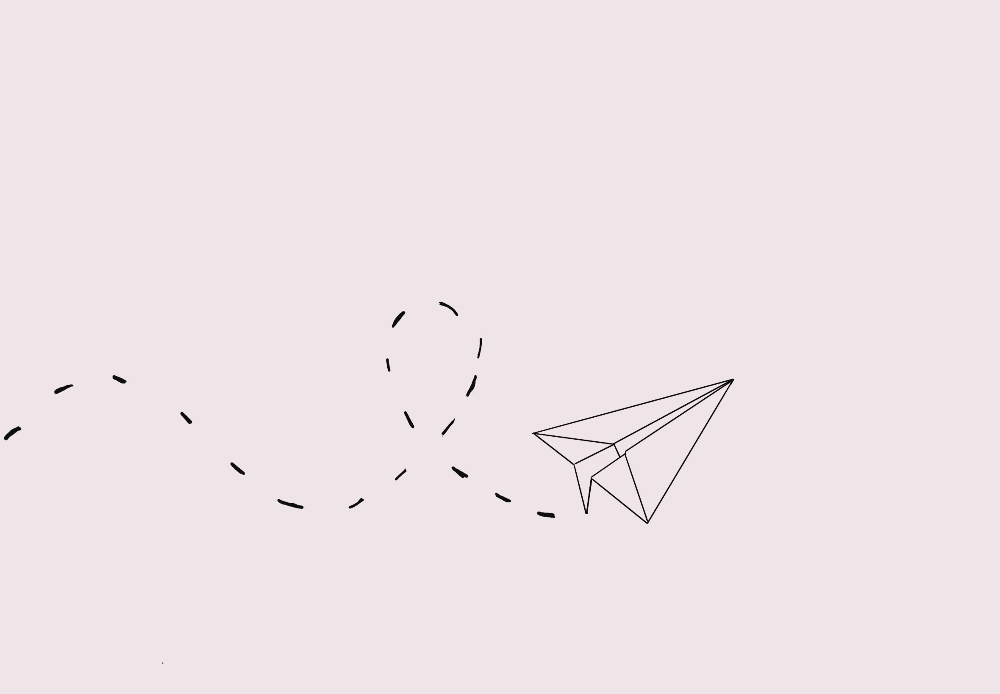
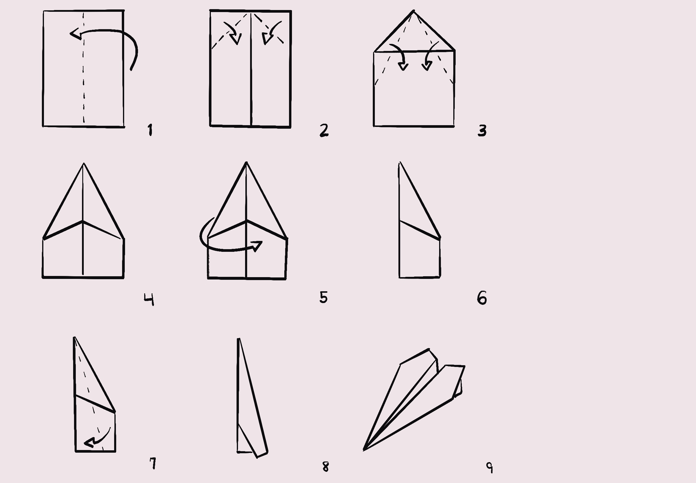

How to Make a Simple Paper Airplane

Materials Needed:
A piece of letter-sized paper (8.5 x 11 inches)

Instructions:
Choose Your Paper:
- Start with a standard piece of letter-sized paper.
- You can use plain white sheets or any other type, as long as it's not too thick or heavy.
Fold in Half:
- Fold the paper in half lengthwise (hotdog-style).
- Make sure the edges align neatly.
Unfold and Fold the Corners:
- Unfold the paper back to its original position
- Now, fold the top corners towards the center crease, creating two triangles at the top.
Fold the Triangles Inward:
- Next, fold the triangles you created inward so their long edges meet along the center crease.
- This forms a narrower triangular shape
Fold in Half Again:
- Fold the entire paper half along the center crease so the triangles are on the inside.
Fold the Wings Down:
- Take the top layer of the paper on both sides and fold them down diagonally, aligning the edges with the bottom edge of the plane.
- This forms the wings of the airplane
Shape the Wings:
- Adjust the wings by gently bending them slightly downward.
- This tweak can affect the flight pattern of the paper airplane.
Ready to Fly:
Hold the paper airplane at its midpoint (where the wings are folded). Find an open area and gently toss it, aiming slightly upward.
HAVE FUN!

Be mindful of where you fly the paper airplane to avoid hitting people, objects, or obstacles.